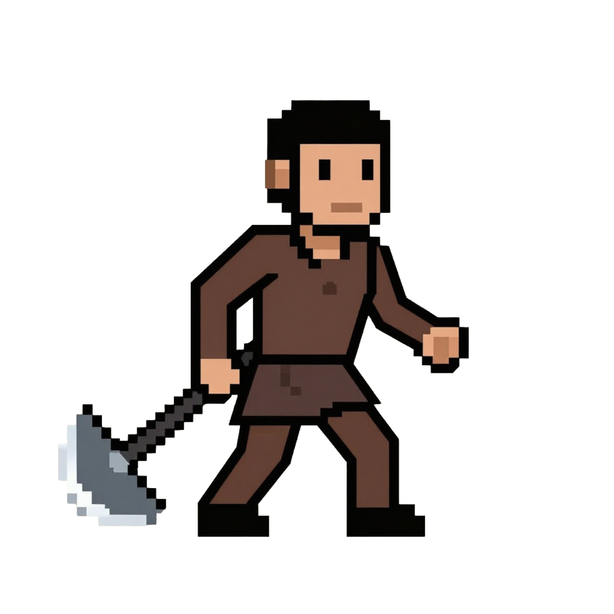
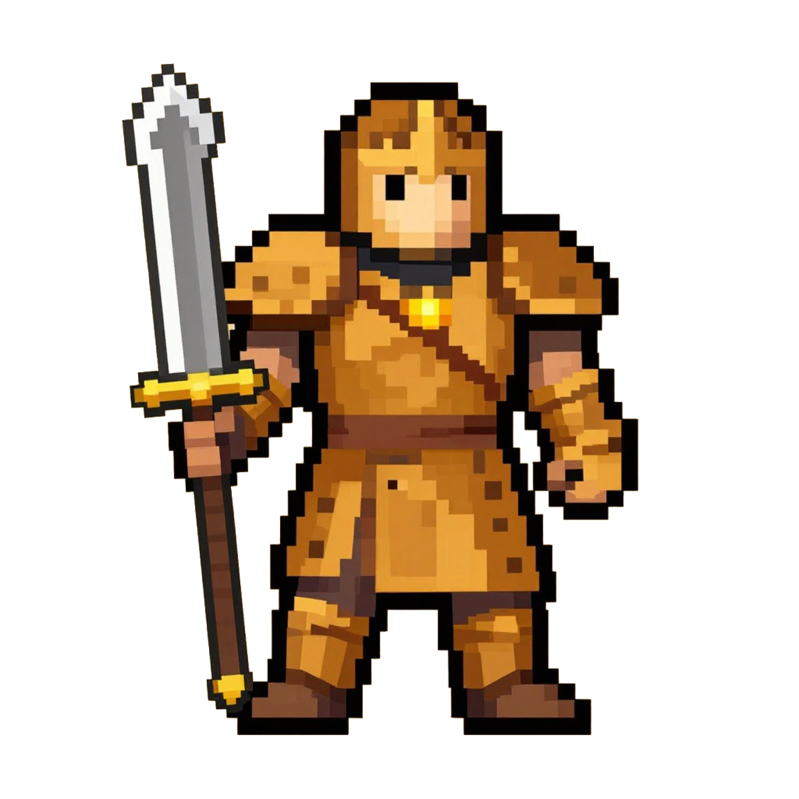
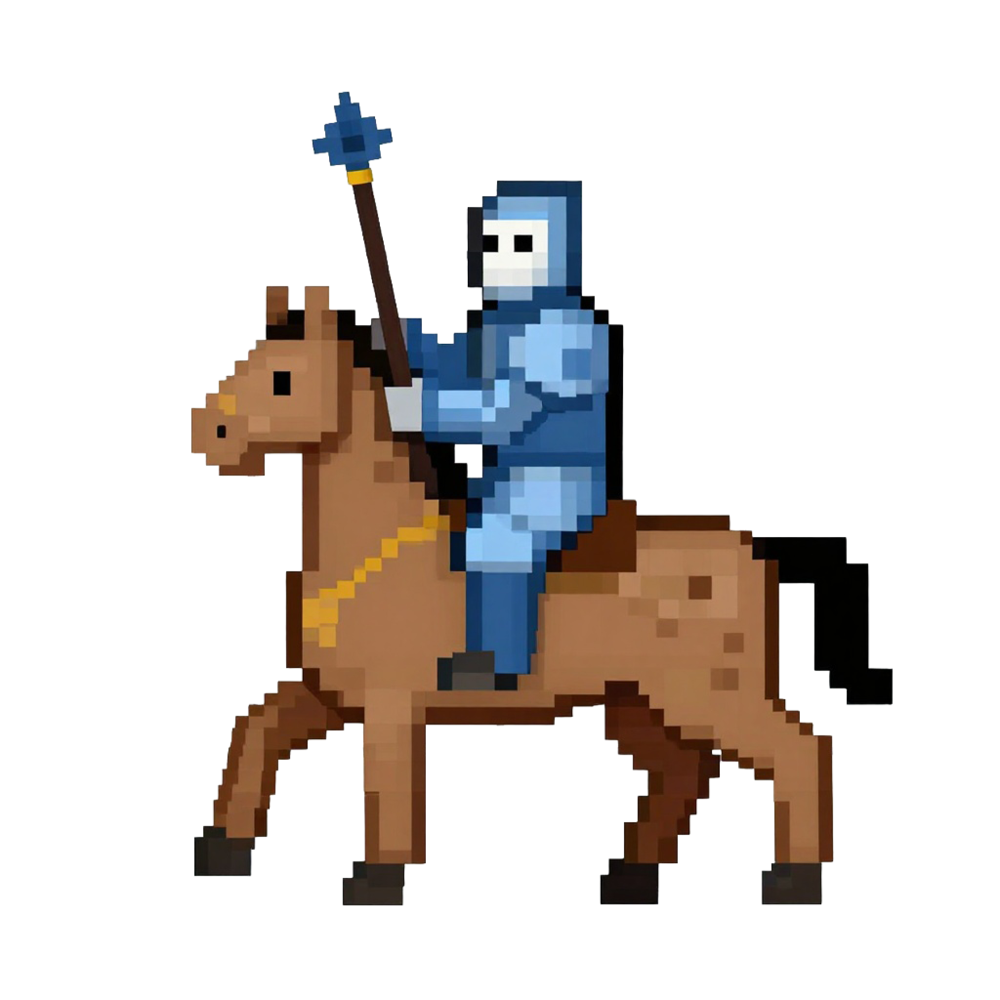
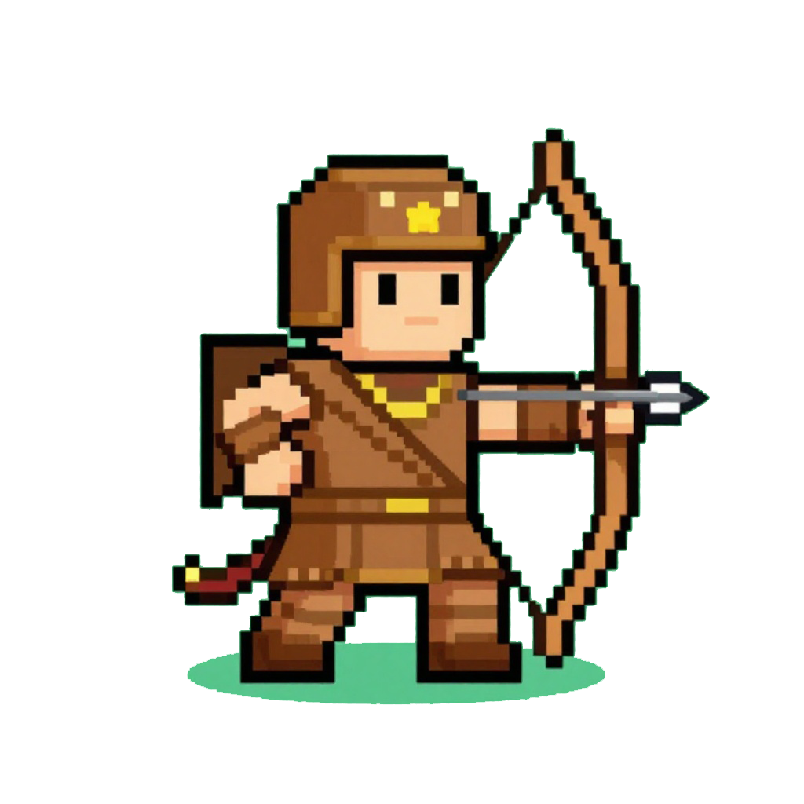
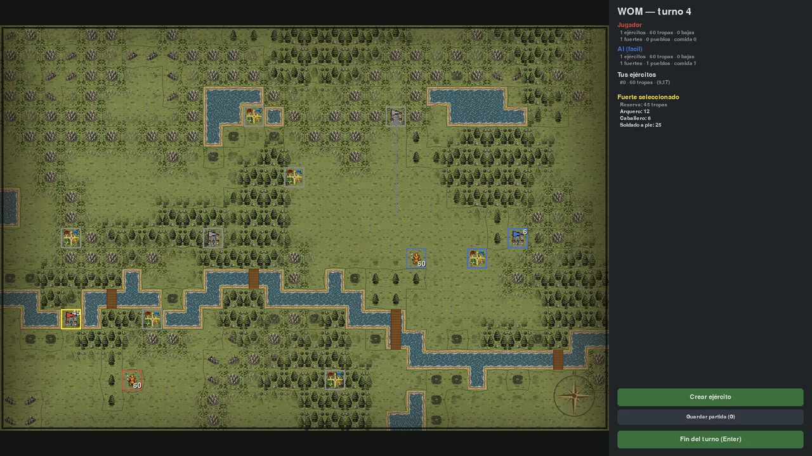
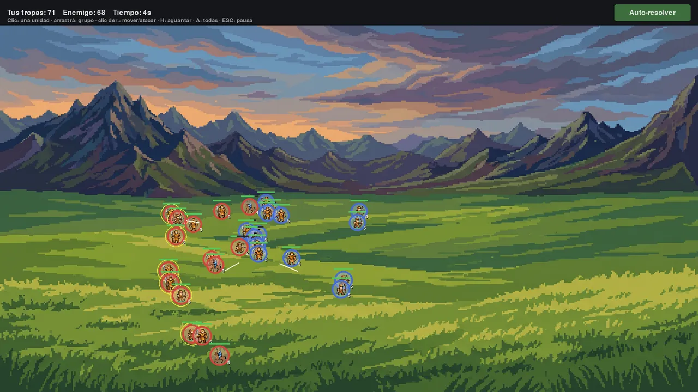
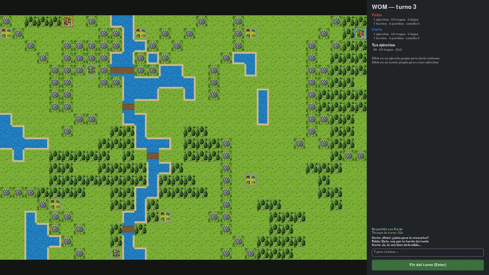
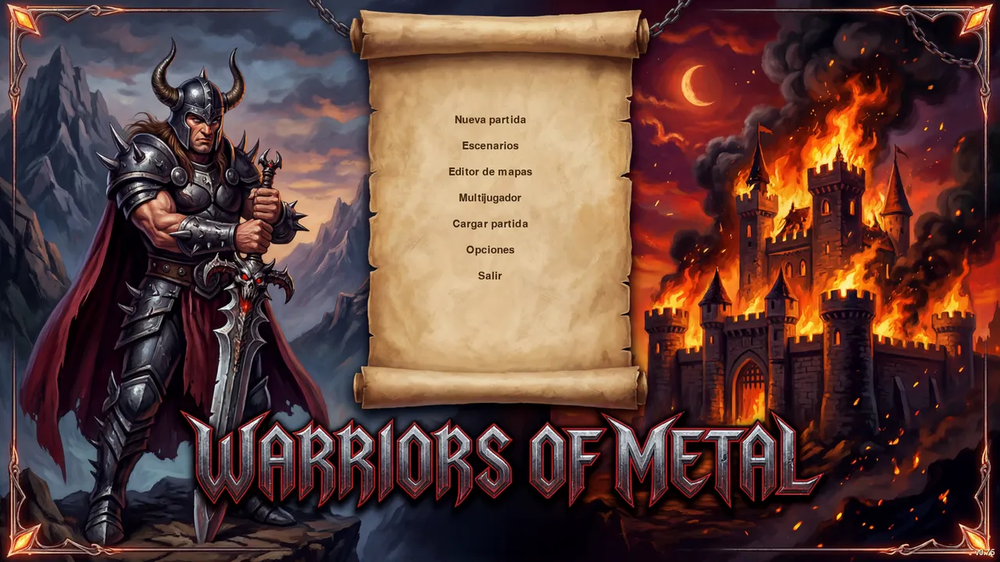
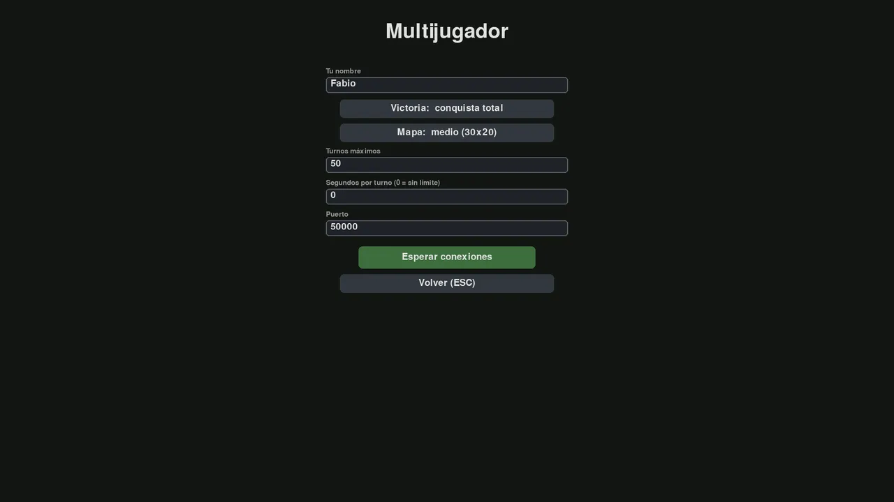

Mapa aleatorio coherente
Cadenas montañosas, bosques en manchas, lagos y ríos con vados. Misma seed, mismo mapa — y misma partida completa.
Gratis · Open source · Windows, Linux y macOS
Estrategia militar 2D por turnos: conquistá un mapa generado al azar, dirigí batallas en tiempo real y enfrentate a la IA, a otros humanos… o a un modelo de lenguaje.
Windows · Linux · macOS (Apple Silicon) — hecho en Python + pygame-ce, licencia GPL-2.0
Cada partida es un mapa nuevo, la misma seed es la misma guerra: todo el azar es determinista, del terreno a la última flecha.
Cadenas montañosas, bosques en manchas, lagos y ríos con vados. Misma seed, mismo mapa — y misma partida completa.
Partisano, soldado, caballero y arquero: piedra-papel-tijera entre clases y bonus de terreno. Los arqueros ignoran la defensa de los fuertes.
Los pueblos producen comida y los fuertes la convierten en tropas de reserva, que salen al mapa cuando creás o reabastecés un ejército.
Auto-resolvé el choque o dirigilo en un mini-RTS: elegí formación de despliegue y da órdenes en vivo, en campo abierto o asaltando un fuerte. También en multijugador.
Fácil, medio y difícil sobre un mismo motor de scoring de objetivos, balanceados por simulación masiva de partidas.
Conquista total, captura de banderas o límite de turnos: elegí cómo se gana antes de empezar.
Por LAN o por Internet con servidor dedicado: lobby con chat, varias partidas a la vez, reconexión y chat en partida.
Gemini, Claude, ChatGPT o modelos locales (Ollama, LM Studio) pueden ocupar un lugar en la partida y jugar como un cliente de red más.
Tropas animadas en mapa y batalla, movimiento en tres fases y reproductor de música configurable dentro del juego.
Partidas guardadas en JSON: una partida cargada continúa exactamente igual, generador de azar incluido.









De 2 a 4 jugadores por red local o por Internet con un servidor dedicado: lobby con chat global, catálogo de partidas simultáneas y reconexión si te caés (la IA cubre tu lugar mientras tanto).
Bajo el capó es lockstep determinista: ambos clientes simulan el mismo turno con las mismas órdenes y seed, así que por la red solo viajan las órdenes. El servidor es un proceso stand-alone de solo stdlib, con rate-limit y protección anti-DDOS.
Conectá un modelo de lenguaje como rival: observa el tablero como ASCII, planifica y emite órdenes de alto nivel. Sirve para medir qué modelo juega mejor a la estrategia — local u online, sin SDKs externos.
Gratis, sin instalador y portable: descomprimí y jugá. Los guardados y la configuración se crean junto al ejecutable.
WOM es un juego 2D liviano: si tu máquina abre un navegador, corre WOM.
WOM es software libre (GPL-2.0), escrito en Python 3.13 con pygame-ce y con una arquitectura en capas estricta: la lógica del juego no importa pygame — y hay un test que lo verifica.
git clone https://github.com/fabiomb/WOM.git
cd WOM
python -m venv .venv
.venv/bin/pip install -r requirements.txt
.venv/bin/python main.pyLa suite de tests corre con pytest y el balance de la IA se valida con simulación masiva de partidas por consola.